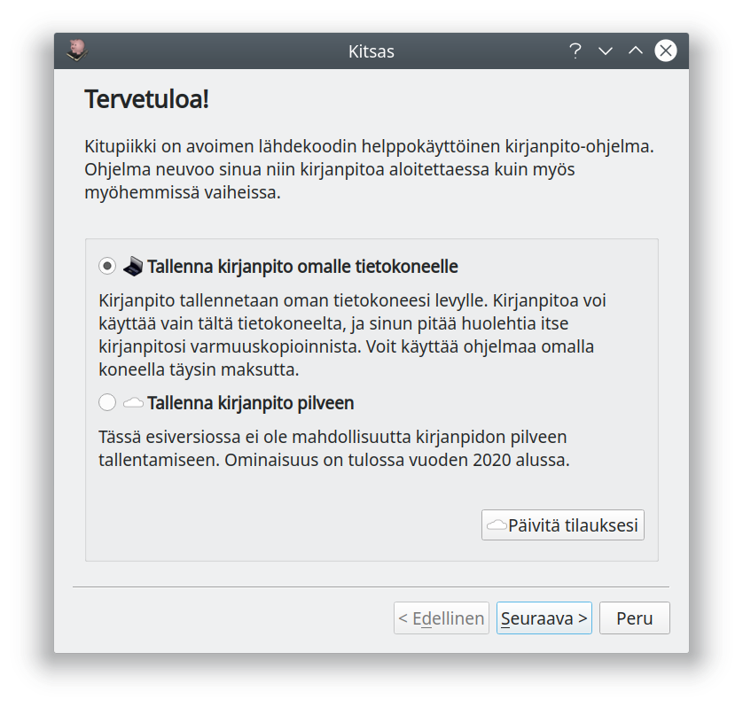
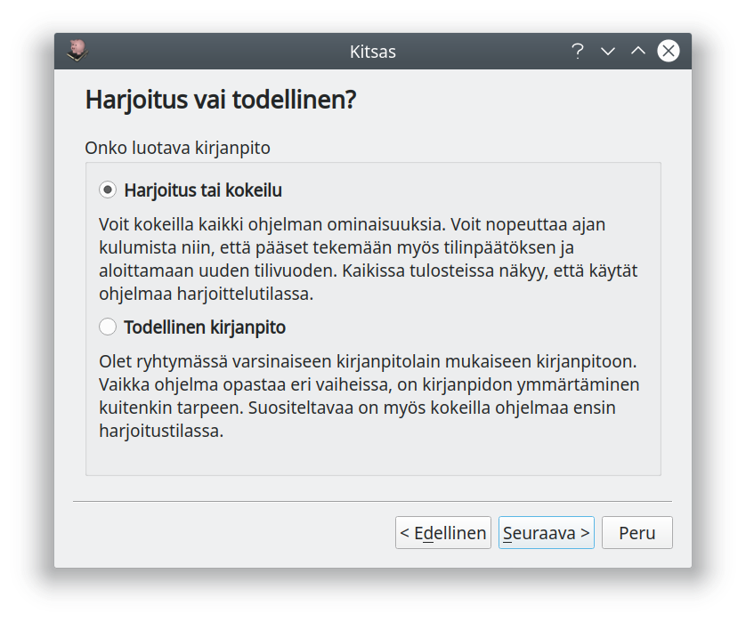
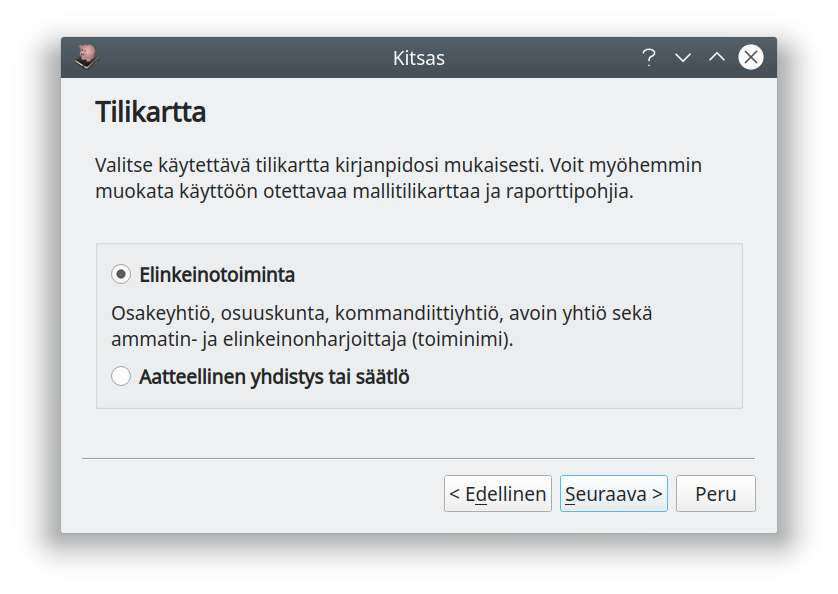
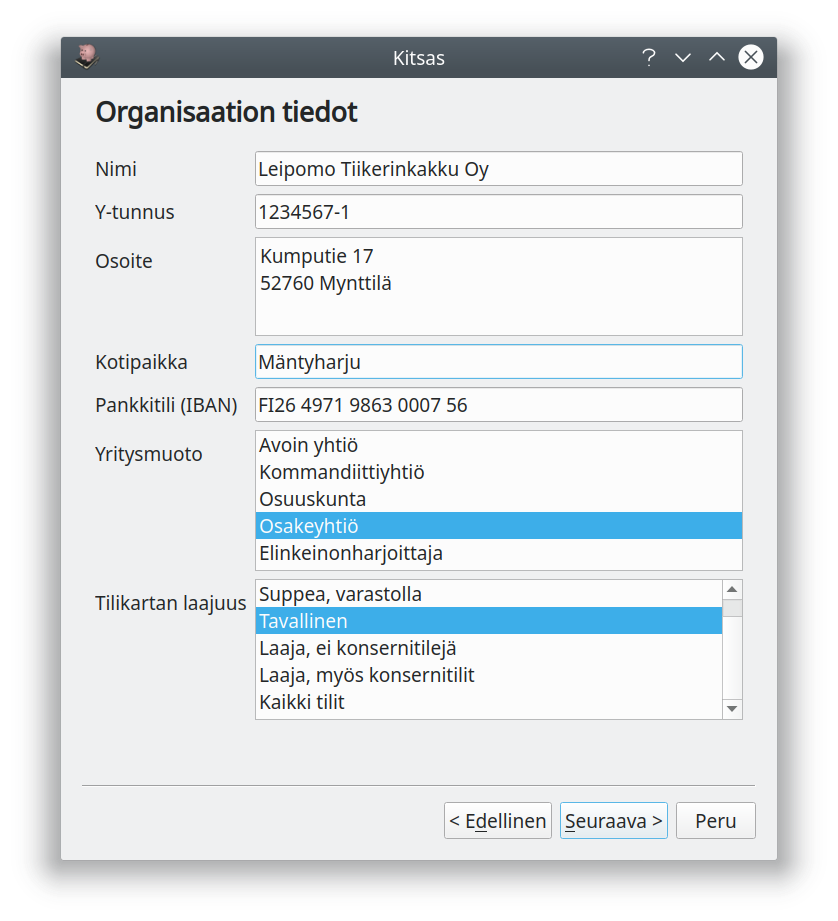
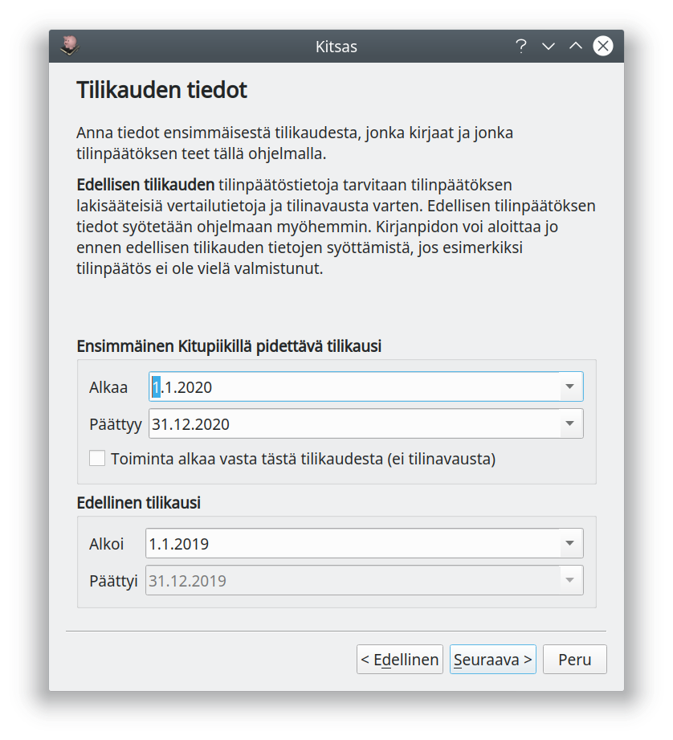
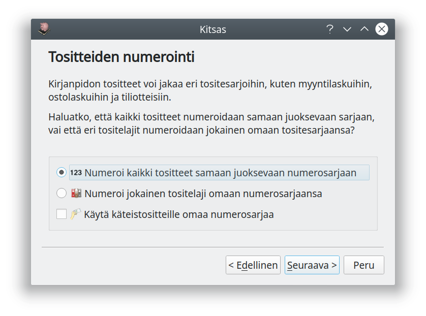
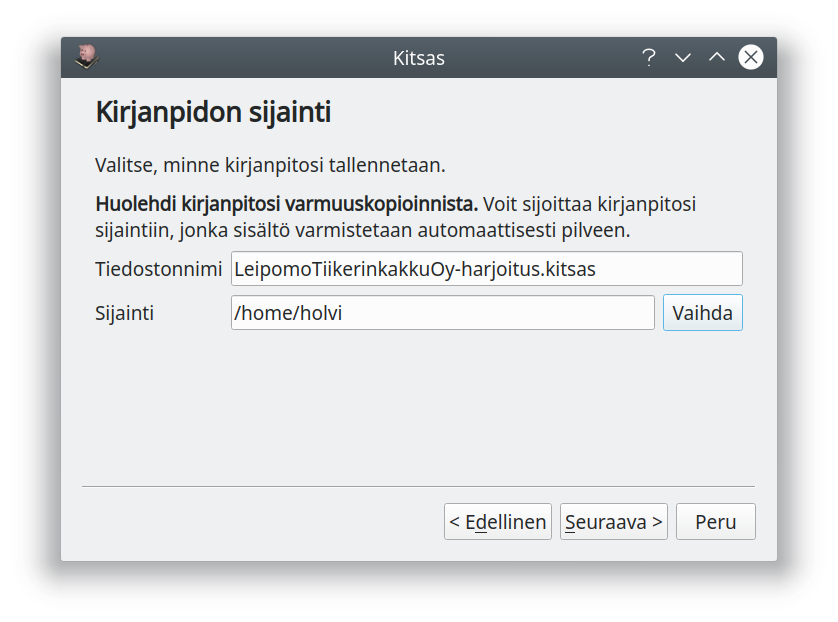
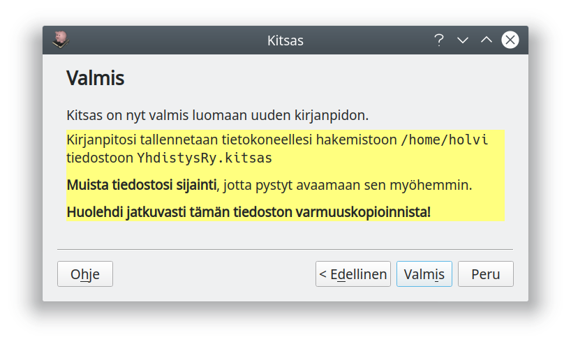
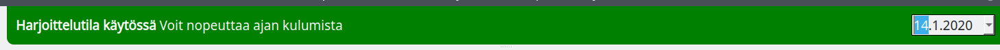

Nämä ohjeet koskevat Kitsaan versioita 2.0 – 2.3
Ohjeet versiosta 3.0 lähtien löytyvät osoitteesta kitsas.fi
Suosittelemme kaikille käyttäjien Kitsaan päivittämistä uudempaan versioon.
Uusi versio on ladattavissa maksutta ohjelman kotisivulta kitsas.fi
Kirjanpidon aloittaminen¶
Aloittaminen¶
Uusi kirjanpito aloitetaan Aloita-välilehden Uusi kirjanpito-napista.
Pilveen vai paikallisesti?¶

Ensimmäisellä näytöllä valitset, tallennetaanko kirjanpito paikallisesti vai Kitsaan palvelimelle. Kitsaan palvelin sijaitsee Suomessa ja varmuuskopioidaan automaattisesti päivittäin.
Huolehdi paikallisen kirjanpidon varmuuskopioinnista
Omalle tietokoneelle tallennettaessa sinun pitää itse huolehtia kirjanpitosi varmuuskopioinnista. Kirjanpidosta pitäisi olla aina toimiva varmuuskopio myös toisella tietovälineellä.
Harjoitus vai todellinen?¶

Seuraavaksi valitaan, oletko aloittamassa todellista kirjanpito vai harjoittelemassa.
Harjoittelutilassa kaikkiin tulosteisiin tulostuu HARJOITUS-teksti, joten ne erottuvat oikeasta kirjanpitoaineistosta. Harjoittelutilassa voit myös tulostaa laskuja haluamillasi päivämäärillä sekä nopeuttaa ajan kulumista jolloin saat näkyviin tilinpäätökseen ja arvonlisäveroon liittyviä ilmoituksia.
Kokeile ensin
Ennen varsinaisen kirjanpidon aloittamista kannattaa Kitsasta kokeilla harjoittelutilassa.
Tilikartta¶

Seuraavaksi valitaan tilikartta. Tilikartta määrittää käytettävien tilien lisäksi myös käytössä olevat raportit eli esimerkiksi tuloslaskelman rakenteen sekä tilinpäätöksen pohjan.
| Tilikartta | Kuvaus |
|---|---|
| Elinkeintotoiminta | Tilikartta yritystoimintaa varten. Yritysmuotoina elinkeinonharjoittaja, avoin yhtiö, kommandiittiyhtiö, osuuskunta, ja osakeyhtiö. |
| Yhdistys | Tilikartta aatteelliselle yhdistykselle ja säätiölle. Tuloslaskelma on yhdistyskaavan mukainen. |
| Asunto-osakeyhtiö | Tilikartta asunto-osakeyhtiöille. Tuloslaskelma on kiinteistökaavan mukainen. |
Voit myöhemmin lisätä, muokata ja poistaa käytössä olevia tilejä samoin kuin raporttien ja tilinpäätöksen malleja.
Perustiedot¶

Seuraavassa ruudussa syötetään organisaation nimi, Y-tunnus, osoite ja kotipaikka. Näitä voi muokata myöhemmin perusmäärityksissä.
Lisäksi kannattaa syöttää pankkitilin (ensisijainen käyttötili) tilinumero. Tilinumero tulostuu laskuille ja sitä käytetään myös maksujen ja tiliotteiden kohdistamiseen. Tilinumeron voi syöttää myöhemmin tilin tietoihin tilikartassa.
Valittava yritysmuoto vaikuttaa siihen, mitä tilejä kirjanpidossa on näkyvillä. Samoin tilikartan laajuus vaikuttaa näkyvillä olevien tilien määrään: Elinkeinotoiminnan tilikartassa on 866 tiliä ja yhdistystilikartalla 339 tiliä. Useimmat yritykset ja yhdistykset tarvitsevat näistä tileistä on pientä osaa - laajuusvalinnan mukaan suurin osa tileistä piilotetaan käyttäjältä.
Voit myöhemmin vaihtaa tilikartan laajuutta tai ottaa yksittäisen tilin käyttöön. Tehdessäsi kirjauksia voit myös tilapäisesti siirtyä selaamaan koko tilivalikoimaa.
Tilikausi¶

Anna tiedot ensimmäisestä Kitsaalla pidettävästä tilikaudesta. Koska tilinpäätökseen tulostetaan vertailutiedot myös edellisestä tilikaudesta, anna myös edellisen tilikauden päivämäärät.
Edellisen tilikauden tiedot syötetään viimeisimmän tilinpäätöksen tilikohtaisesta tase-erittelystä sekä tuloslaskelman erittelystä. Voit aloittaa kirjanpidon ja myös tehdä uusia kirjauksia, vaikka tilinavausta ei olisikaan tehty.
Valitse Toiminta alkaa vasta tästä tilikaudesta vain, jos yritys perustetaan vasta tällä tilikaudella eikä tilinavausta tehdä lainkaan.
Tositteiden numerointi¶

Valitse, haluatko numeroida kaikki tositteet yhteen juoksevaan sarjaan, vai haluatko jakaa tositteet erikseen numeroitaviksi tositesarjoiksi joilla on omat kirjaintunnusteensa, esimerkiksi ML myyntilaskuilla ja OL ostolaskuille.
Voit myös muodostaa oman tositesarjan kaikille käteiskuiteille.
Kannattaako käyttää tositesarjoja?
Jos paperisia tositteita on paljon, kannattaa ne mapittaa tositetyypeittäin eri mappeihin (esimerkiksi ostolaskut ja myyntilaskut erikseen), ja muodostaa näistä kirjanpito-ohjelmassa omat tositesarjansa.
Jos tositteita on vain vähän, voivat ne hyvin olla kaikki numeroitu samaan sarjaan. Jos tositteet säilytetään sähköisesti, ei tositenumeroinnin muodolla ole erityistä merkitystä, koska sähköinen arkisto huolehtii tositteiden ja kirjanpidon yhteydestä.
Tiedostojen sijainti¶

Tallentaessasi kirjanpidon omalle koneelle valitse tiedostonnimi ja tallennussijainti. Tähän tiedostoon tallennetaan koko kirjanpito kaikkine liitteineen niin, että kirjanpidon voi siirtää tai varmuuskopioida kopioimalla tämän yhden tiedoston.
Huolehdi varmuuskopioinnista
Huolehdi kirjanpitosi varmuuskopioinnista! Kirjanpidosta tulisi olla aina varmuuskopio toisella tietovälineellä!
USB-muisti on hidas
Vältä kirjanpidon tallentamista USB-muistitikulle, sillä sen käsittely on hidasta.
Kirjanpito pilvessä
Ota tietosuojamääräykset huomioon, jos harkitset kirjanpitosi sijoittamista pilvipalveluun synkronoitavaan hakemistoon. Jos esimerkiksi asiakasrekisterissä on GDPR:n mukaisia henkilötietoja, niin niiden sijoittaminen EU:n ulkopuolella sijaitsevalla palvelimella voi olla laitonta.
Kitsas Oy tarjoaa mahdollisuuden tallentaa kirjanpito Kitsaan omalla pilvipalvelulla Suomessa sijaitsevalle palvelulle, jossa tietoturvasta on huolehdittu GDPR:n mukaisesti. Kitsaan pilvipalvelu mahdollistaa myös useamman samanaikaisen käyttäjän.
Valmista tuli!¶

Kaikki valinnat on tehty ja Kitsas on valmis luomaan uuden kirjanpidon.
Viimeistele vielä määritykset¶
Ennen kuin aloitat kirjausten tekemisen, kannattaa vielä tarkistaa joukko määrityksiä. Ne kaikki on selostettu Asetukset-luvussa.
- Lisää perusmäärityksiin logo, puhelinnumero yms. tietoja
- Yleensä kaikki tarpeelliset tilit löytyvät tilikartasta, mutta tarvittaessa voit muokata tilikarttaa.
- Jos haluat käyttää kohdennuksia (kustannuspaikat ja projektit), lisää ne asetuksista
- Syötä tilinavaus edellisen tilinpäätöksen perusteella
Tutustu ohjelmaan
Ohjelmasta löytyy melkoinen määrä erilaisia asetuksia ja toimintoja. Jo ennen varsinaisen kirjanpidon aloittamista kannattaa ohjelman ohjeisiin tutustua ajan kanssa.
Harjoittelutila¶

Jos käytät harjoittelutilaa, on ikkunan ylälaidassa vihreä Harjoittelutila käytössä-palkki, ja vaihtamalla oikeassa yläkulmassa olevaa päivämäärää voit "matkustaa ajassa" eli määrätä, mikä päivä on menossa, ja siten kokeilla vaikkapa tilinpäätöksen tekemistä, alv-tilitystä tai uuden tilikauden aloittamista.